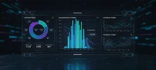

.webp)
.webp)
.webp)

Cloud Architecture
Reference designs, secure landing zones, and zero-trust templates built specifically for rigorous financial and health compliance.
Learn MoreStackly designs, deploys, and manages robust, zero-trust cloud infrastructure for hyper-growth enterprises — ensuring speed, continuous compliance, and direct cost savings.
Accountable engineering pods handling your heaviest infrastructure challenges from start to steady-state operations.
Reference designs, secure landing zones, and zero-trust templates built specifically for rigorous financial and health compliance.
Learn More
Seamless data and application migrations with zero downtime. Built on automated runbooks designed to eliminate drift.
Learn More
GitOps pipeline automation, Infrastructure-as-Code deployment, and Kubernetes cluster management for scalable services.
Learn More
Continuous guardrails mapping infrastructure state to regulatory frameworks (HIPAA, SOC 2, PCI-DSS) automatically.
Learn More
24/7/365 active monitoring, incident mitigation, SRE escalation, and system health checks to protect your runtime.
Learn More
Proactive FinOps auditing, intelligent resource sizing, and container optimization to drop waste without losing horsepower.
Learn MoreAn structured roadmap from assessing your baseline system health to executing zero-drift auto-scaling fleets.
We perform a rigorous deep-dive into your existing infrastructure, identifying architectural blockages, security liabilities, and over-provisioned resources. You receive a complete technical health score and optimization report with zero commitment.


Our principal cloud architects engineer a custom, robust platform design. This plan defines the migration pathways, cost-optimized parameters, and secure boundaries required to scale seamlessly.
We handle the heavy lifting. Using state-of-the-art automation blueprints and verified runbooks, we migrate your workloads safely with absolutely zero impact to your customer-facing uptime.

Launch is day zero. Stackly continuously optimizes your compute metrics and cloud spending parameters, ensuring your managed system grows with your scale without eating your margin.
Our platform gives your team one view into the cost, security, and runtime signals that matter, simplifying governance while accelerating innovation.

“Achieving SOC 2 compliance used to require months of paperwork and systems auditing. Stackily integrated automated compliance guardrails directly into our CI/CD from day one, shaving months off our roadmap.”
CTO, Finflow Inc.
“We migrated over 180 legacy workloads to AWS using Stackily's engineered migration route. The entire transition completed with zero disruption to our active customers. Exceptional technical execution.”
VP of Engineering, Meridian Retail
“FinOps is typically a reactive game. Stackily changed that for us by providing real-time cost transparency and continuous cluster right-sizing that knocked out 44% of our monthly server bill instantly.”
Head of DevOps, StackFlow
“Deploying zero-trust landing zones across our multi-region footprint seemed like a multi-year effort. Stackily delivered fully automated, drift-free Terraform modules that had us audit-ready in weeks.”
Head of Cloud Security, Apex Health
“Stackily’s 24/7 managed operations and proactive SRE pods eliminated our recurring latency spikes. Our checkout platform handled record traffic with 99.999% availability and zero customer degradation.”
VP of Infrastructure, HyperScale
With over 3 million monthly users, Meridian needed to escape their unstable legacy server setup. Stackily designed and executed a migration route that lowered latencies and slashed operating costs completely on-schedule.
A modular infrastructure blueprint unifying multi-cloud fabrics, automated compliance guardrails, and real-time cost containment into one command surface.
Connect distributed AWS, GCP, and Azure workloads through automated WireGuard and eBPF transit overlays with end-to-end cryptographic integrity.

Continuous state inspection comparing live infrastructure against GitOps blueprints with instant automated rollbacks.
Dynamic rightsizing and automated Spot arbitrage eliminating idle resources without starving critical microservices.

Senior SRE pods actively monitoring telemetry across all distributed regions. Sub-2 minute incident mitigation with automated runbooks and dedicated Slack war rooms.
Explore how Stackly transitions massive monoliths and microservices into zero-drift, auto-scaling platforms with guaranteed zero disruption.

We provision immutable VPC topologies, federated IAM, and hardened perimeter firewalls verified against rigorous CIS and SOC 2 benchmarks.
View Technical Specs
Progressive traffic migration using ArgoCD and service mesh canaries. Every release is validated against automated synthetic health checks.
View Technical SpecsDynamic HPA and Karpenter cluster autoscaling tuning compute to burst demand in seconds without manual overhead or costly over-provisioning.
View Technical Specs
Hands-off peace of mind. Ongoing 24/7/365 active monitoring, automated incident mitigation, and weekly FinOps unit economics reports.
View Technical SpecsClear, transparent answers from principal infrastructure architects on migration risks, security compliance, and guaranteed delivery.
.webp)
Direct Slack / Teams Escalation Channel
We deploy bi-directional Change Data Capture (CDC) replication proxies between your legacy database and target cloud engines (such as AWS Aurora or Cloud Spanner). Traffic is progressively mirrored and validated down to microsecond parity before cutting over DNS with zero transaction drops.
Yes. We wrap your existing Terraform or OpenTofu modules with lightweight OPA (Open Policy Agent) and Checkov pre-flight checks directly within GitHub Actions, GitLab CI, or Jenkins. Your team continues committing standard code while gaining automated security boundaries and drift detection.
Our initial FinOps sprint typically uncovers 25% to 45% in direct waste within 72 hours—including orphaned snapshots, over-provisioned idle instances, unattached EBS volumes, and suboptimal storage tiers. We implement automated scheduling and spot arbitrage that locks in immediate cash savings.
Your team is backed by a dedicated, named SRE pod with automated PagerDuty escalation and an active Slack/Microsoft Teams war room. We maintain a contractual sub-2 minute triage SLA, with authority to execute pre-approved runbooks and mitigate runtime threats instantly.
Zero vendor lock-in. Everything Stackly designs is 100% open-standard, industry-verified Infrastructure as Code (Terraform, Kubernetes, Helm, OpenTelemetry). If you ever choose to manage the platform in-house, your team owns the complete repositories and documentation from day one.